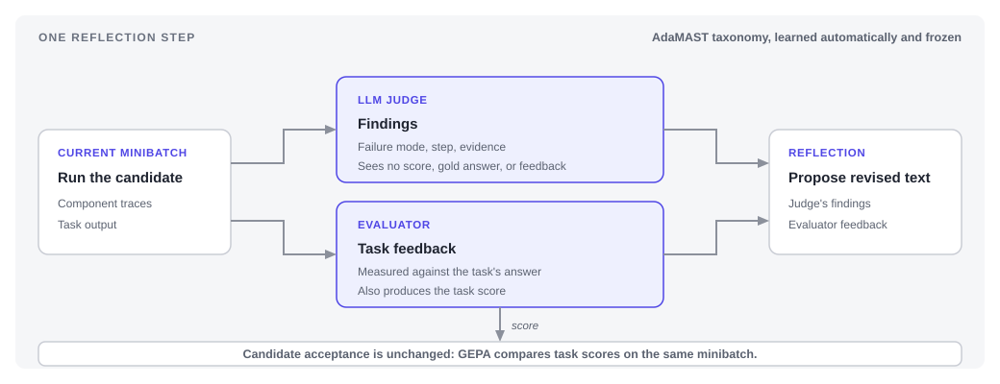

Named Failure Modes: Diagnosing the Program, Not Just the Output¶
TL;DR. GEPA usually reflects on feedback about task performance. Our pipeline automatically builds a reusable guidebook from execution traces, then uses it to review how each answer was produced. No one writes the categories or reviews individual traces, and the added process report improved every paired run we evaluated under the same optimization budget.
![Grouped bar chart of held-out test score on three benchmarks. In each group a dashed grey line marks the unoptimized base program, an orange bar shows unmodified GEPA, and an indigo bar shows GEPA with the automatic process report, with the three individual seed runs drawn as small circles on each bar. HotpotQA rises from a 0.493 base to 0.656 with GEPA and 0.679 with the process report, a gain of 2.3 points. IFBench rises from a 0.350 base to 0.462 and then 0.548, a gain of 8.6 points. HoVer rises from a 0.477 base to 0.559 and then 0.657, a gain of 9.7 points. On every benchmark the lowest process-report seed sits above the highest baseline seed.](../../../../2026-08-18-named-failure-modes/images/hero.png)
At each proposal step, GEPA asks a reflection model to revise the current candidate using examples from the current minibatch and feedback produced by the task adapter. That feedback can be detailed, but it is anchored to task performance. It does not necessarily expose recurring patterns in how the program's intermediate steps interact.
We add a second automated reviewer that examines the program's intermediate steps and uses extra inference to uncover recurring process problems. The system creates its own review criteria from earlier traces, applies them to new traces, and sends the resulting report to GEPA. A person never writes the categories, labels a trace, or approves an individual report.
The evaluator and second reviewer work independently, and their reports meet only when GEPA reflects on the current rollout. Under the same optimization budget, this additional report improved every paired run we evaluated.
How it works¶
After launch, every stage runs automatically. People neither construct the review criteria nor inspect and approve the reports produced from individual traces.
1. Harvest. Run the seed program and retain its component-level execution traces.
2. Generate. Build and refine a reusable set of named process problems from those traces, then freeze it for optimization.
3. Review. Apply the frozen criteria to each new rollout and pass the resulting process report to reflection alongside the usual task feedback.
If trusted review criteria already exist, the pipeline can begin at the third step.

Taxonomy generation¶
We call this reusable set of review criteria a failure taxonomy. Each entry, or failure mode, names a recurring process problem and specifies the trace evidence that supports it.
We generate that vocabulary with the open-source AdaMAST1 pipeline. Independent LLM annotators propose, refine, and test the codes through iterative agreement rounds. The agreement gate measures whether the codes can be applied consistently and with sufficient coverage; it does not establish that every diagnosis is correct.
For each benchmark program, this process runs once and produces a frozen taxonomy. The same taxonomy is reused across seeds and later optimization runs, and the online reviewer cannot invent codes outside it. Taxonomy generation is fully automatic: no person writes labels, edits the taxonomy, resolves disagreements, or annotates individual examples.
Taxonomy generation details
All stages used Sonnet 4.6: generation, refinement, and four independent annotators. Each benchmark began with eight draft steps and required four or five agreement rounds. In each round, the four annotators judged five traces. The target thresholds were κ ≥ 0.75 and coverage ≥ 0.70.
| Benchmark | Agreement rounds | κ trajectory | Final codes | Anchors |
|---|---|---|---|---|
| HotpotQA | 4 | 0.707 → 1.0 | 28 | 24 |
| IFBench | 5 | 0.689 → 0.918 → 1.0 | 24 | 27 |
| HoVer | 4 | 0.925 → 1.0 | 22 | 24 |
All three runs ended at κ = 1.0 and coverage = 1.0, with one learned rule each. These values describe agreement on five traces in the final round, so they are a consistency check over a small sample rather than evidence that every diagnosis is correct.
Why the second reviewer is outcome-blind¶
During optimization, an LLM applies the frozen taxonomy to each trace. We refer to this model as the taxonomy judge. It reviews a deliberately restricted version of the trace: the program's intermediate inputs and outputs are available, but the task score, pass/fail result, gold answer, and evaluator feedback are not. Trace review is automatic, so no person selects the codes, checks the supporting evidence, or approves a diagnosis before reflection receives it.
This separation keeps the second report focused on process rather than correctness. A failure mode can appear in a rollout whose final answer happens to be correct; exposing the outcome could bias the judge toward failed tasks or encourage it to restate the evaluator's verdict. Outcome blindness lets the judge search for hidden patterns on their own terms, preserving information that the task-level report may miss.
Same budget, different allocation¶
The online review is the only operation added during optimization. Candidate selection, sampling, scheduling, and the acceptance gate remain unchanged, and the taxonomy judge uses the same model as the reflector.
Every baseline and taxonomy run received the same $60-per-seed optimization budget. Unmodified GEPA spends that budget on rollouts, candidate evaluation, validation, and reflection. The taxonomy arm pays for those operations and the online judge from the same $60, leaving room to evaluate fewer proposals.
Across the reported benchmark averages, the taxonomy arm accepted 50.8% of its proposals, compared with 45.1% for unmodified GEPA, although the rate was not higher on every individual benchmark. Its accepted-candidate pool therefore remained close in size even after paying for diagnosis. A larger budget or substantially larger accepted pool cannot explain the score difference.
| Cost component | Unmodified GEPA | GEPA + taxonomy |
|---|---|---|
| Rollouts, candidate evaluation, validation, and reflection | Included in the $60-per-seed budget | Included in the $60-per-seed budget |
| Online taxonomy judge | Not applicable | Included in the same $60-per-seed budget |
| Mean proposals / accepted candidates | HotpotQA: 52.0 / 30.3 IFBench: 49.0 / 23.7 HoVer: 65.3 / 21.0 |
HotpotQA: 42.0 / 26.7 IFBench: 46.0 / 21.7 HoVer: 41.3 / 17.3 |
| Offline trace harvest | Not applicable | $1.14–$1.87 per benchmark |
| Offline AdaMAST generation | Not applicable | $3–$4 per benchmark |
The table separates the matched online budget from one-time offline preparation. Trace harvesting runs the base candidate once over the 300-example validation split and records the intermediate component inputs and outputs used to build the taxonomy. Those model calls cost $1.14 for HotpotQA, $1.87 for IFBench, and $1.28 for HoVer.
Generating and refining the taxonomy costs $3 to $4 per benchmark. Combined with trace harvesting, the one-time offline setup costs $4 to $6 per benchmark, or roughly 3% of the $180 optimization budget across three treatment seeds. The frozen taxonomy can then be reused across seeds and later runs.
How diagnoses are attributed to components
The taxonomy defines behaviors, not a fixed code-to-component map. For reflection, the integration uses trace evidence to attach a diagnosis only to the component records it implicates. This attribution identifies where the behavior appeared in the trace; it does not say whether the overall task passed or failed.
Results¶
We evaluated on three benchmarks that stress different parts of a program: multi-hop question answering (HotpotQA), instruction following (IFBench), and multi-hop retrieval (HoVer). Each arm ran three seeds.
Setup
- Models. Haiku 4.5 as the task model; Sonnet 4.6 for both GEPA's reflection and the taxonomy judge.
- Splits. 150 train / 300 validation / 300 test on all three. HotpotQA is drawn from the fullwiki validation set (7,405 labeled examples), HoVer from the dev release (4,000 claims) filtered to claims with exactly three unique supporting titles.
- IFBench generalization. Train and validation come from
allenai/IF_multi_constraints_upto5; the test set is all 300 examples ofallenai/IFBench_test. The constraint vocabularies are disjoint, with 54 constraint IDs on the train side and 58 on the test side, so the result cannot come from replaying a train-side constraint ID. - Programs. HotpotQA and HoVer are four-component programs; IFBench is two components, a generator and a checker. Reflection mini-batches are 15, 6, and 5 examples respectively.
- Metrics. HotpotQA is scored by mean F1, IFBench by prompt-level loose accuracy, HoVer by strict all-document retrieval.
- Seeds. Three per arm, paired across arms.
Named feedback wins on every benchmark and every seed¶
| Benchmark | Base program | GEPA | GEPA + taxonomy | Δ |
|---|---|---|---|---|
| HotpotQA (mean F1) | 0.4929 | 0.6559 | 0.6788 | +2.3 pp |
| IFBench (prompt-level loose) | 0.3500 | 0.4622 | 0.5478 | +8.6 pp |
| HoVer (strict all-document) | 0.4767 | 0.5593 | 0.6567 | +9.7 pp |
All nine seed-paired comparisons favor named feedback, and on every benchmark the observed ranges are disjoint: the lowest taxonomy seed beats the highest baseline seed. The separation is widest on HoVer, where the lowest taxonomy run scores 0.6367 against a highest baseline score of 0.5800.
Per-seed results
Every row is a paired comparison with the same seed and optimization budget. The taxonomy arm adds the diagnostic call and feeds its output to reflection.
| Benchmark | Seed | GEPA | GEPA + taxonomy | Δ |
|---|---|---|---|---|
| HotpotQA | 1 | 0.6588 | 0.6776 | +1.9 pp |
| HotpotQA | 2 | 0.6577 | 0.6829 | +2.5 pp |
| HotpotQA | 3 | 0.6511 | 0.6758 | +2.5 pp |
| IFBench | 1 | 0.4517 | 0.5800 | +12.8 pp |
| IFBench | 2 | 0.4617 | 0.5333 | +7.2 pp |
| IFBench | 3 | 0.4733 | 0.5300 | +5.7 pp |
| HoVer | 1 | 0.5547 | 0.6367 | +8.2 pp |
| HoVer | 2 | 0.5800 | 0.6600 | +8.0 pp |
| HoVer | 3 | 0.5433 | 0.6733 | +13.0 pp |
Relative to the lift over the base program, the effect is larger than the raw deltas suggest. Unmodified GEPA improves the base program by 16.3 points on HotpotQA, 11.2 on IFBench, and 8.3 on HoVer; with named feedback, those lifts become 18.6, 19.8, and 18.0 points. The total improvement over the base program is therefore 1.1×, 1.8×, and 2.2× the lift delivered by unmodified GEPA.
What diagnoses the judge produced¶
The judge produced a broad, benchmark-specific mix of diagnoses. It fired 21 or 22 distinct codes on each benchmark, with markedly different distributions.
| Benchmark | Judged traces | Codes per trace | Codes fired | Most frequent code |
|---|---|---|---|---|
| HotpotQA | 2,356 | 0.84 | 22 | Spurious_Fact_Introduced_At_Summarization (20.3%) |
| IFBench | 989 | 2.77 | 22 | Checker_Missed_Constraint_Violation_In_Draft (19.0%) |
| HoVer | 934 | 2.27 | 21 | Partial_Verification_Treated_As_Full (18.8%) |
The rate difference is consistent with the programs' different shapes and should not be read as a task failure rate or a direct comparison of failure severity. HotpotQA averages 0.84 codes per trace; IFBench averages 2.77, in part because its generator-and-checker structure lets one span receive both Solver_Constraint_Noncompliance_In_Draft and Checker_Missed_Constraint_Violation_In_Draft. Counts are code occurrences rather than distinct failed tasks, and the judge can assign multiple labels to one span.
Failure code distributions
Shares are of all code occurrences on that benchmark. The final row of each table collapses the remaining codes.
HotpotQA: 1,990 occurrences over 2,356 traces, 22 of 28 codes fired.
| Code | n | Share |
|---|---|---|
Spurious_Fact_Introduced_At_Summarization |
403 | 20.3% |
Retrieval_Returns_Topically_Adjacent_But_Irrelevant |
373 | 18.7% |
Instruction_Non_Compliance_In_Output_Format |
266 | 13.4% |
Unconditional_Termination_Masking_Low_Quality_Output |
204 | 10.3% |
Solver_Answer_Not_Grounded_In_Evidence |
137 | 6.9% |
Dual_Summary_Aggregation_Failure |
135 | 6.8% |
Solver_Unwarranted_Uncertainty_When_Answer_Available |
129 | 6.5% |
Solver_Incorrect_Factual_Answer |
98 | 4.9% |
| 14 further codes | 245 | 12.3% |
IFBench: 2,739 occurrences over 989 traces, 22 codes fired.
| Code | n | Share |
|---|---|---|
Checker_Missed_Constraint_Violation_In_Draft |
520 | 19.0% |
Spurious_Content_Addition |
311 | 11.4% |
Solver_Constraint_Noncompliance_In_Draft |
290 | 10.6% |
Keyword_Or_Element_Count_Error |
233 | 8.5% |
Structural_Format_Constraint_Violation |
233 | 8.5% |
Agent_Task_Refusal_Or_Abandonment |
164 | 6.0% |
Instruction_Non_Compliance |
145 | 5.3% |
Forbidden_Content_Inclusion |
144 | 5.3% |
| 14 further codes | 699 | 25.5% |
HoVer: 2,119 occurrences over 934 traces, 21 codes fired.
| Code | n | Share |
|---|---|---|
Partial_Verification_Treated_As_Full |
398 | 18.8% |
Instruction_Non_Compliance |
371 | 17.5% |
Coordinator_Misidentifies_Critical_Unverified_Sub_Claim |
270 | 12.7% |
Absence_Of_Evidence_Treated_As_Evidence_Of_Absence |
255 | 12.0% |
Contradictory_Sub_Summaries_Not_Reconciled |
107 | 5.0% |
Contradictory_Evidence_Ignored_In_Verdict |
107 | 5.0% |
Hallucinated_Passage_Support |
102 | 4.8% |
Coordinator_False_Claim_Verification_Acceptance |
75 | 3.5% |
| 13 further codes | 434 | 20.5% |
One paired trace: confidence versus grounding¶
A paired trace comparison from HotpotQA seed 1 illustrates how the information presented to reflection differed. Both arms rewrote the same component from the same seed text at the same transition. The starting instruction for summarize1 was the DSPy default:
The baseline arm, with no diagnoses, rewrote toward confidence:
Directly answer the question... Do not hedge or say the answer cannot be
determined if you can reasonably infer it from context or general knowledge
combined with the passages.
...
Do not over-qualify: Avoid adding unnecessary caveats about what passages
do or don't contain.
At the same transition, the taxonomy arm saw the failure modes Spurious_Fact_Introduced_At_Summarization and Dual_Summary_Aggregation_Failure in the reflection minibatch. It instead rewrote toward grounding:
Ground every claim strictly in the provided passages: Do NOT introduce any
facts, inferences, or details that are not explicitly stated in the passages.
...
Do not add colloquial nicknames, historical context, or additional facts
unless they are directly quoted or stated in one of the provided passages.
...
Key Principle ... When in doubt, omit rather than invent.
Same component, same starting text, same step of the search, opposite conclusions: the baseline moves toward confidence, while the taxonomy arm moves toward grounding. This paired trace is illustrative rather than a causal attribution to a single label, but it shows the concrete distinction between the information available to the two reflection calls. On this benchmark, the judge's most frequently assigned code is the introduction of unsupported facts during summarization.
The evidence span also aligns closely with the rewrite. For that run, the judge attached Spurious_Fact_Introduced_At_Summarization to summarize1 with the evidence "Kapolei is colloquially known as being part of the leeward coast of Oahu." The rewritten prompt targets the behavior down to the word colloquially.
Integration point¶
The integration sits inside GEPA's reflective proposal path rather than inside a task adapter. After the adapter creates its ordinary reflection records for the current minibatch, an optional reviewer examines the captured trajectories and adds the process report before GEPA requests a revision. The adapter remains the same object throughout, so existing DSPy, LangChain, OpenAI, and custom adapter behavior is unchanged.
Taxonomy generation remains a separate preparation phase. A single launcher can harvest the seed program's traces, generate and freeze the taxonomy, and then start optimization without human intervention, but the GEPA run begins only after the taxonomy artifact has been written. During optimization, the reviewer uses the same model configured for reflection.
Using the hook¶
The integration is one optional argument on gepa.optimize. The enricher receives the candidate, the captured evaluation batch, the components under revision, and the adapter's reflective dataset, and returns the enriched dataset:
import gepa
from failure_taxonomy import LLMFailureJudge, TaxonomyFeedbackEnricher, load_taxonomy
taxonomy = load_taxonomy("results/taxonomy/hover-auto-v1/taxonomy.json")
enricher = TaxonomyFeedbackEnricher(judge=LLMFailureJudge(taxonomy=taxonomy, lm=reflection_lm))
result = gepa.optimize(
seed_candidate=seed,
adapter=my_adapter, # DSPy, LangChain, OpenAI, or custom, unchanged
trainset=trainset,
valset=valset,
reflection_lm=reflection_lm,
reflective_dataset_enricher=enricher,
)
Each diagnosed example gains a single failure_modes field naming the fired codes and their evidence spans. Everything else in the reflective dataset is exactly what the adapter produced, and leaving the argument out gives ordinary GEPA.
Setup¶
The integration, the pipeline, and the experiment scripts live in the companion repository. The optimizer-side hook is a small additive patch against GEPA v0.1.4, kept in patches/:
git clone https://github.com/AndreiBerkeley/gepa-named-failure-modes.git
cd gepa-named-failure-modes
uv sync
git clone --branch v0.1.4 https://github.com/gepa-ai/gepa.git ../gepa-taxonomy-hook
git -C ../gepa-taxonomy-hook apply "$PWD/patches/gepa-reflective-dataset-enricher.patch"
One command then runs the full treatment workflow for a benchmark. It evaluates the base program on the held-out validation split, saves the captured traces, generates and freezes the taxonomy, and starts taxonomy-conditioned GEPA:
Bring an existing taxonomy with --taxonomy path/to/taxonomy.json to skip preparation, or pass --dry-run to print every phase without making a model call. The supported benchmarks are hotpotqa, ifbench, hover, livebench-math, and appworld.
Next steps¶
A natural next step is to test whether structured diagnoses can replace, rather than augment, the evaluator used during optimization. We are exploring whether the taxonomy judge can serve both as the source of reflective feedback and as the rubric for ranking and accepting candidates, without exposing gold labels or manually authored correctness feedback anywhere in the optimization loop. If successful, this would make GEPA applicable to settings where reliable gold feedback is expensive, unavailable, or impossible to construct. Early results are promising, but the procedure still requires refinement and broader evaluation, particularly on tasks where gold feedback is unavailable during optimization.
-
Mert Cemri, Andrei Cojocaru, Melissa Pan, Shu Liu, Shubham Agarwal, Alexander Krentsel, Jay Tang, Kannan Ramchandran, Joseph E. Gonzalez, Matei Zaharia, Alexandros G. Dimakis, and Ion Stoica, "Fantastic Adaptive Taxonomies and How to Use Them," ICML 2026 FAGEN Workshop (Best Paper). Project page. ↩